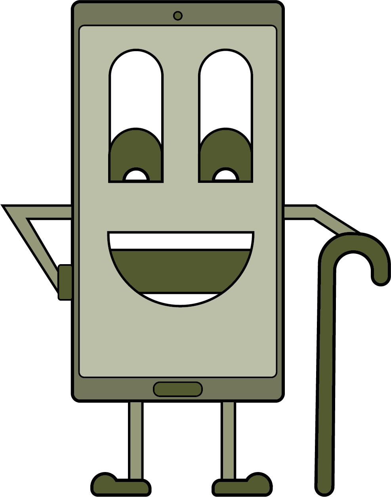
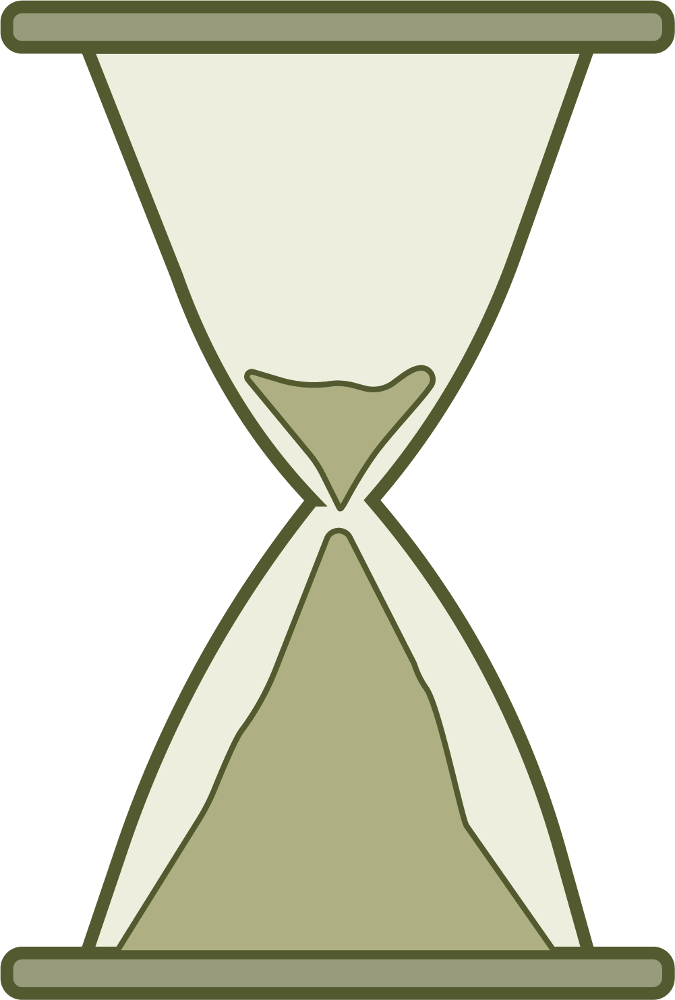
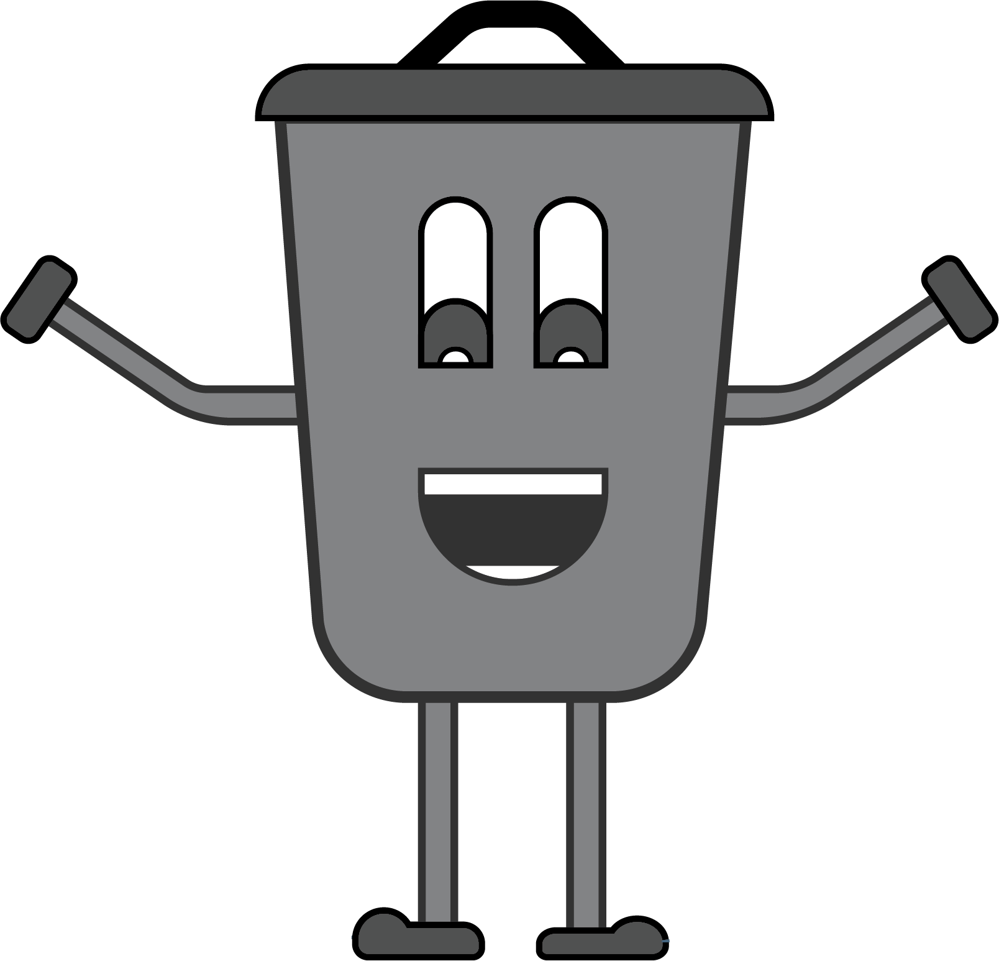
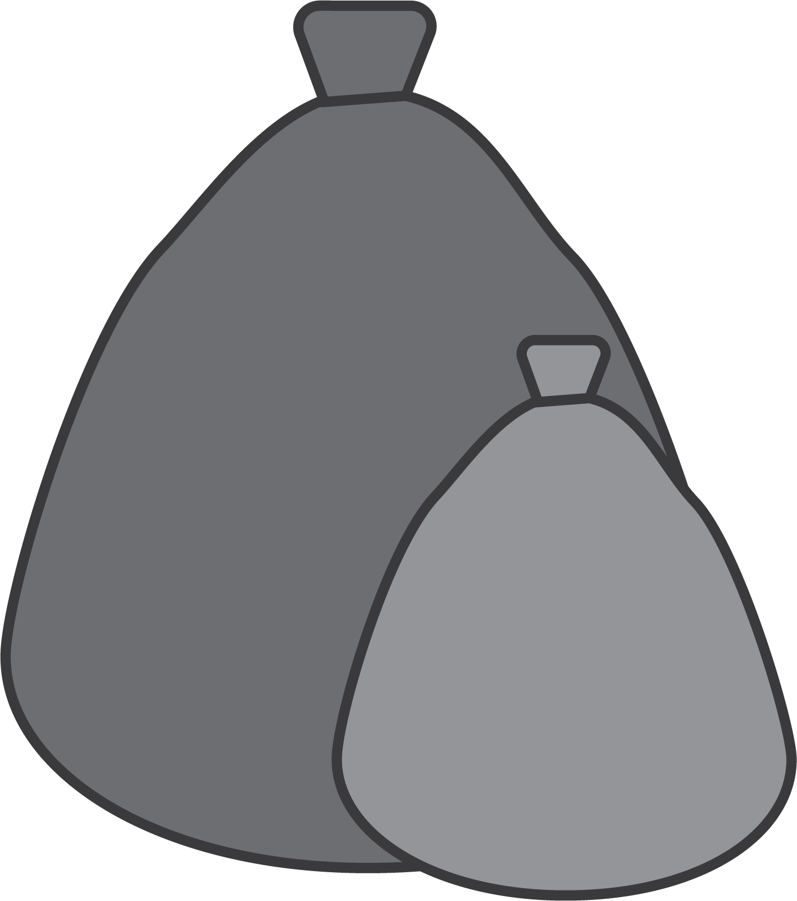

Afval
Ontdek de kracht van refurbished goederen en hun missie om afval te verminderen.
Verlening product levensduur
Wist je dat...


Door refurbished laptops te gebruiken, de levensduur van die apparaten met wel 2 tot 5 jaar kan worden verlengd?
Vermindering afval

Wist je dat...
Elk jaar belanden miljoenen tonnen elektronisch afval op stortplaatsen. Refurbished elektronica draagt bij aan het verminderen van deze afvalberg en het behoud van waardevolle grondstoffen.
